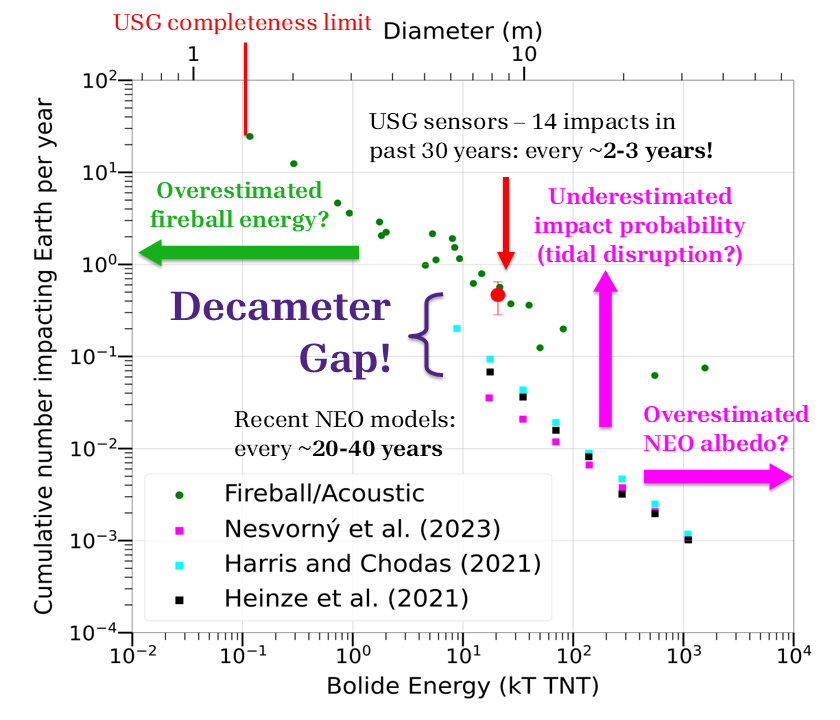
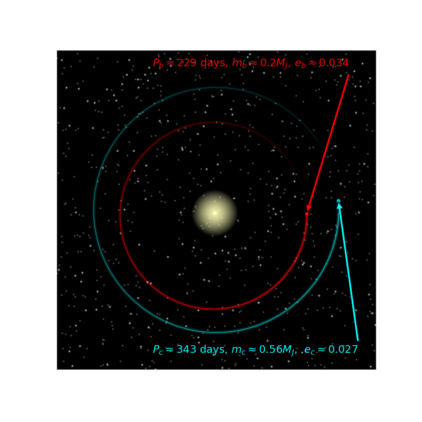

Research Themes:
My current research focus is on small Solar System bodies, particularly near-Earth objects (NEOs) —
Earth's closest celestial neighbours. NEOs are of significant practical and scientific interest, representing
potential threats to Earth, ideal targets for spacecraft exploration and in-situ resource mining, as well as a
physical record of the Solar System's formation and evolution. I use simulations, observational and statistical
methods to study these objects in Earth's atmosphere and in space. In
Chow & Brown (2025),
we use fireball data from U.S. Government satellites recorded in NASA's
Center for Near Earth Object Studies (CNEOS) Fireball and Bolide
database. to conduct the first population-level study characterizing the orbital and dynamical properties of
decameter-size Earth impactors. We identify the so-called decameter gap
, an order-of-magnitude discrepancy
between the observed impact rate of decameter-size objects (about once every 2-3 years) and the impact rate
predicted by NEO models calibrated to telescopic surveys (about once every 30 years). We evaluate possible causes for
this gap and characterize the likely source regions of the decameter impactor and telescopically detected NEO
populations. In Chow & Brown (2026),
we develop a novel Bayesian inference method for deriving physical properties of Earth-impacting asteroids and
meteoroids from their observed light curves in the atmosphere. We use this method to characterize the strength
and structure of the decameter impactors from
Chow & Brown (2025),
identifying structurally distinct classes: weak homogenous objects, which completely disintegrate below 1.5 MPa,
heterogeneous objects which gradually break up between ~1-8 MPa, and strong-aggregates which remain largely intact
until 9-10 MPa. The first two classes of these decameter-size objects generally break up in two stages;
an initial stage at 0.04-0.09 MPa
where a small amount of mass is lost, and a secondary stage between ~1-4 MPa where most mass loss occurs.

Ultra-light axions (ULAs) are a type of very low-mass theoretical elementary particles that can behave either as cold dark matter or dark energy. The distribution of ULAs depends on several cosmological parameters, which affect the cosmic microwave background (CMB). By generating synthetic CMB power spectra for various parameter values and comparing them to observations, a posterior axion distribution can be estimated. Previous studies have only sampled “slices” of this distribution, keeping certain parameters fixed, because of high computational cost.
For the 2023 SURP program at the University of Toronto, I designed a 4-D test distribution qualitatively similar to previous axion distribution estimates to evaluate the ability of Markov Chain Monte Carlo (MCMC) and nested sampling to sample the parameter space. I then used MCMC sampling in conjunction with a new machine learning method called axionEmu, a neural network that can compute CMB power spectra much faster (~10,000 times!) than previous methods such as CAMB, to constrain the full ULA distribution for the first time now that it is computationally feasible.
Check out my poster or my interview with the Dunlap Institute!

Dynamical interactions in stellar clusters can sometimes eject stars from the cluster entirely to become isolated stars. While isolated stars are crucial to understanding cluster and galaxy evolution, identifying their birth environments is difficult. However, stars generally retain the elemental abundances from their birth environments. If a cluster’s parent molecular cloud has a relatively uniform composition, an isolated star’s birth cluster can be identified by comparing its elemental “fingerprint” to those of known clusters, a technique called chemical tagging. Dimensionality reduction methods like t-SNE and UMAP have been used in previous chemical tagging studies to recover clusters. However, these algorithms do not account for measurement uncertainty.
For my Statistics undergraduate thesis at the University of Toronto, I developed a dimensionality reduction method based on a variational autoencoder (VAE) neural network that explicitly propagates Gaussian error, unlike t-SNE/UMAP. Using APOGEE DR17 chemical abundance data, I demonstrated that the VAE-based model was able to preserve most of the intrinsic information while reproducing Gaussian error.
A paper demonstrating the applications of the VAE-based model is currently in preparation.

Many stars have been discovered hosting multiple planets in mean-motion resonance (MMR), in which their orbital periods are exactly related by a ratio of small integers. MMRs can form due to planetary migration, a process in which interactions with a protoplanetary disk can cause a planet’s orbit to move inward or outward from its star. As planet-disk interactions are common during planet formation, MMRs represent the archetypal results of convergent orbital migration and are a unique opportunity to study how migration shapes the architecture of planetary systems.
For my Astronomy undergraduate thesis at the University of Toronto, I used \(N\)-body simulation to fit radial velocity data for the planetary system HD 45364, which has two Jupiter-mass planets in a 3:2 MMR. Using new data from the HARPS telescope, I derived strong constraints on the planets’ masses for the first time, and developed a model for planetary migration into the system's current resonant configuration. I also found that instrumental noise in radial velocity observations of stars can generally lead to biased inferences about the dynamics of their planets and specifically whether they are in MMR. I was awarded the university's Smith Solis Research Scholarship in Astronomy and Astrophysics for my work.
